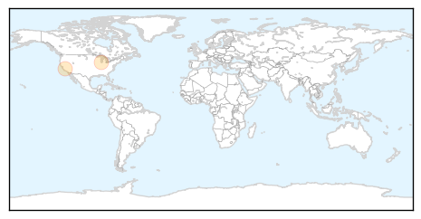
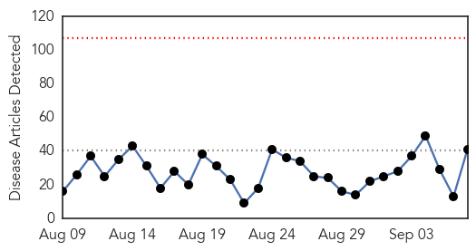
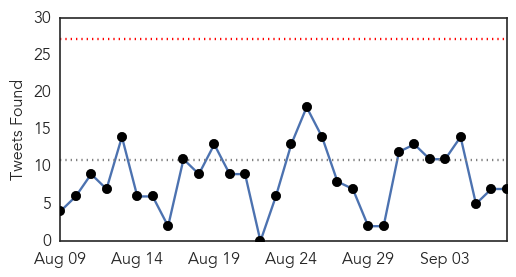
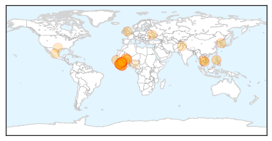
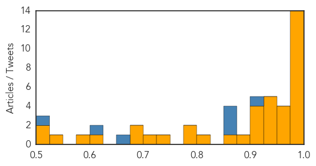

Pertussis
30-Day Web Trend
0 alerts, 0 warnings

30-Day Twitter Trend
0 alerts, 0 warnings

Article Locations
Article Confidences

Top Articles:
Top Tweets:
-
No tweets found for Sep 07, 2015
Ebola
30-Day Web Trend
0 alerts, 0 warnings

30-Day Twitter Trend
0 alerts, 0 warnings

Article Locations
Article Confidences
Top Articles:
- 1.000
- Lingering Ebola Stigma: UAE Still Enforcing Liberia Ban
- 1.000
- Liberia Declared Ebola-Free for 2nd Time
- 0.999
- Ebola Virus Strain Found In Monkeys At a Facility In Philipines Are Non-Lethal
- 0.998
- Liberia receives 2nd Ebola-freed certificate
- 0.996
- President Koroma Confirms New Ebola Case in Sierra Leone's Quarantine Village
- 0.995
- American aid worker stricken with Ebola arrives in US for treatment
- 0.995
- New Ebola case in Sierra Leone quarantine village
- 0.994
- New Ebola case in Sierra Leone quarantine village
- 0.993
- West African Child Is Paralyzed by Vaccine-Derived Polio
- 0.988
- New Ebola case in Sierra Leone quarantine village: President
- 0.988
- New Ebola case in Sierra Leone quarantine village: President Ernest Bai Koroma
- 0.985
- New Ebola case in Sierra Leone village
- 0.981
- New Ebola case identified in Sierra Leone
- 0.981
- New Ebola case in Sierra Leone quarantine village: president
- 0.972
- Liberian Government Frowns On Stigmatization Of Liberian Citizens
- 0.960
- New health checks in works for travellers
- 0.959
- New health checks in works for travellers, National, Phnom Penh Post
- 0.954
- Polio resurfaces in Mali from Ebola-hit Guinea - WHO
- 0.950
- Polio case confirmed in Mali
- 0.947
- Polio resurfaces in Mali from Ebola-hit Guinea - WHO
- 0.943
- Polio resurfaces in Mali from Ebola-hit Guinea: WHO
- 0.940
- Sierra Leone: New Ebola case in Sierra Leone quarantine village: president
- 0.934
- Transparent information release of health agencies important
- 0.922
- Polio resurfaces in Mali from Ebola-hit Guinea: WHO
- 0.919
- Polio resurfaces in Mali - WHO - Africa
- 0.915
- Polio resurfaces in Mali from Ebola-hit Guinea: WHO
- 0.911
- Fleet of Ambulances to boost the restoration of basic health Services Post-Ebola
- 0.890
- ArcelorMittal Donates US$5,000.00, Buckets To Bassa Task Force While Sime Darby Gives US$800, Chlorine,Assorted Medical Supplies To Cape Mount County
- 0.859
- New Polio Case Confirmed In Mali
- 0.814
- Pakistan seeks US support for upgrading public health laboratories
- 0.799
- New Ebola case in Sierra Leone quarantine village
- 0.785
- Sierra Leone's First Ebola Survivor Shattered After Her Newborn Succumbs to an Infection
- 0.733
- Reuters Health News Summary
- 0.710
- Polio resurfaces in Mali from Ebola-hit Guinea - WHO
- 0.678
- Government of Sierra Leone Press Release
- 0.676
- Maine Nurse Kaci Hickox Says She Won't Obey Isolation Rules
- 0.603
- Ebola is still with us, President Koroma warns
- 0.581
- Sierra Leone News : Post-Ebola Recovery needs Critical Steps
- 0.535
- Adadevoh, Fesse Shine Through at THISDAY 20th Awards, Articles
- 0.517
- One Doctor's Campaign To Pay Those Who Risked Their Lives
- 0.512
- Playhouse Foundation hosts a Post-Ebola Recovery Roundtable:
Top Tweets:
- 0.991
- Dallas Ebola cases: What went wrong? - Outbreak News Today http://t.co/I9f659gPvz ebola EVD
- 0.975
- New Ebola case in Sierra Leone quarantine village: president - Yahoo News http://t.co/WPY9APJcwf ebola EVD
- 0.975
- New Ebola case in Sierra Leone quarantine village: president - Yahoo News http://t.co/QPEufBjZ8e ebola EVD
- 0.975
- New Ebola case in Sierra Leone quarantine village: president - Yahoo News http://t.co/JCFSoQis9S ebola EVD
- 0.913
- Independent Report On Presby's Ebola Response Criticizes Preparedness ... - D Healthcare Daily http://t.co/e7gjZaj1Nz ebola EVD
- 0.885
- Dallas Ebola cases: What went wrong? - Outbreak News Today http://t.co/c38rQeViqR
- 0.882
- Polio resurfaces in Mali from Ebola-hit Guinea: WHO - Yahoo News http://t.co/mXm24DFYWm ebola EVD
- 0.845
- Playhouse Foundation hosts a Post-Ebola Recovery Roundtable: - Sierra Express Media http://t.co/gq682t2jci ebola EVD
- 0.801
- Polio resurfaces in Mali from Ebola-hit Guinea, WHO says - CBC.ca http://t.co/xJ55zpRWmU ebola EVD
- 0.786
- New Ebola case in Sierra Leone quarantine village: president - Yahoo News http://t.co/V7T16C02I9
- 0.706
- Polio resurfaces in Mali from Ebola-hit Guinea: WHO - The Globe and Mail http://t.co/g38qQV7zn0 ebola EVD
- 0.623
- After Ebola, we can start getting angry about the buses again - The Guardian http://t.co/2qDgm079DA ebola EVD
- 0.557
- Palace assures public on Ebola - http://t.co/Kl01SJy01T http://t.co/cufy21XcrM ebola EVD
- 0.530
- .@shelter4world designed rapidly deployable ETUs that moderate temperature and simplify Ebola decontamination http://t.co/hJTlPP3NtP
- 0.525
- .@UNICEF: children with no caregivers particularly vulnerable in villages quarantined due to Ebola http://t.co/18Cgff7PJL